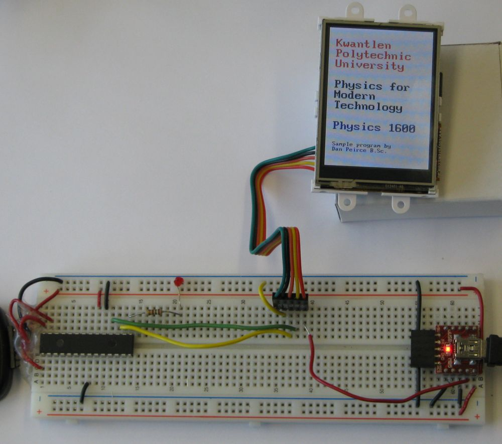
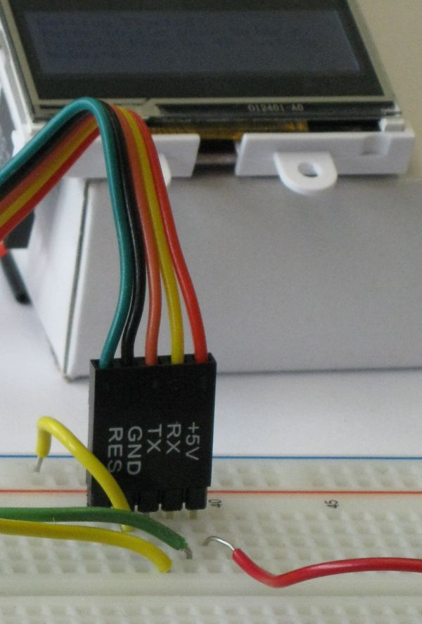
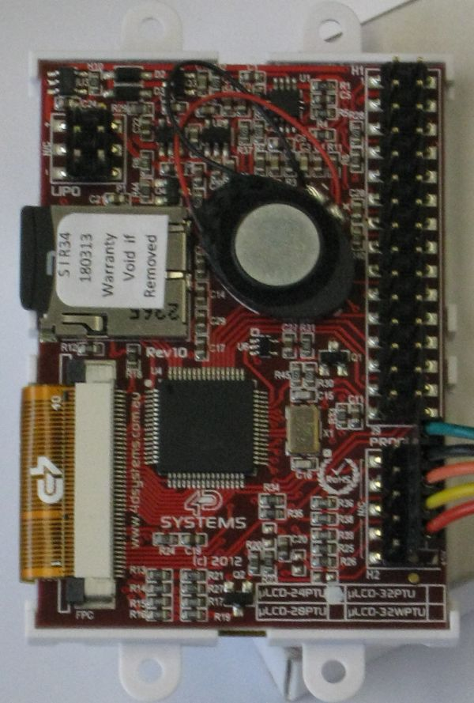
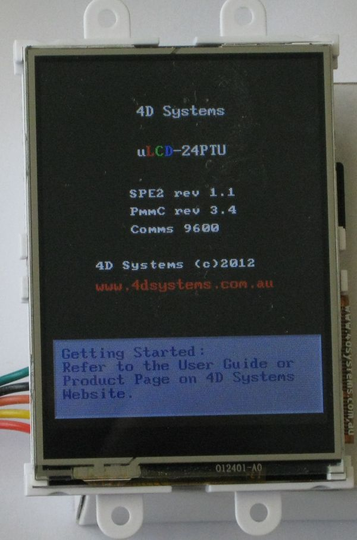
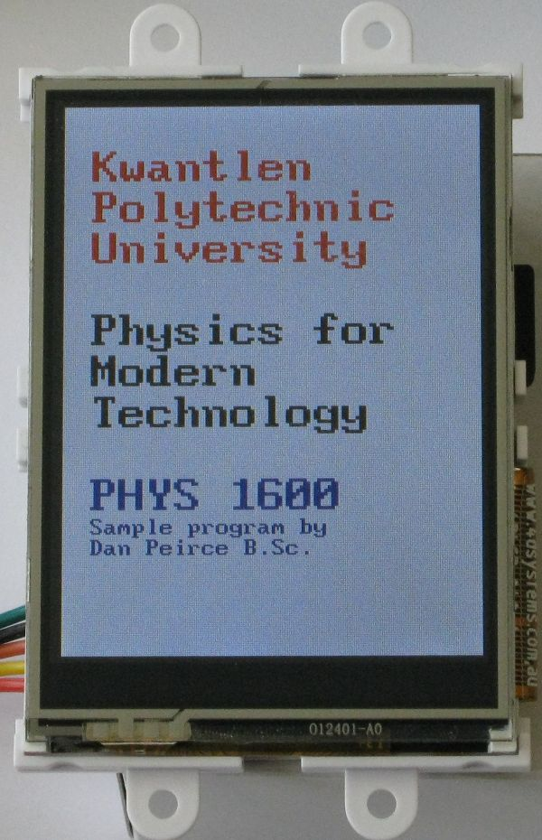
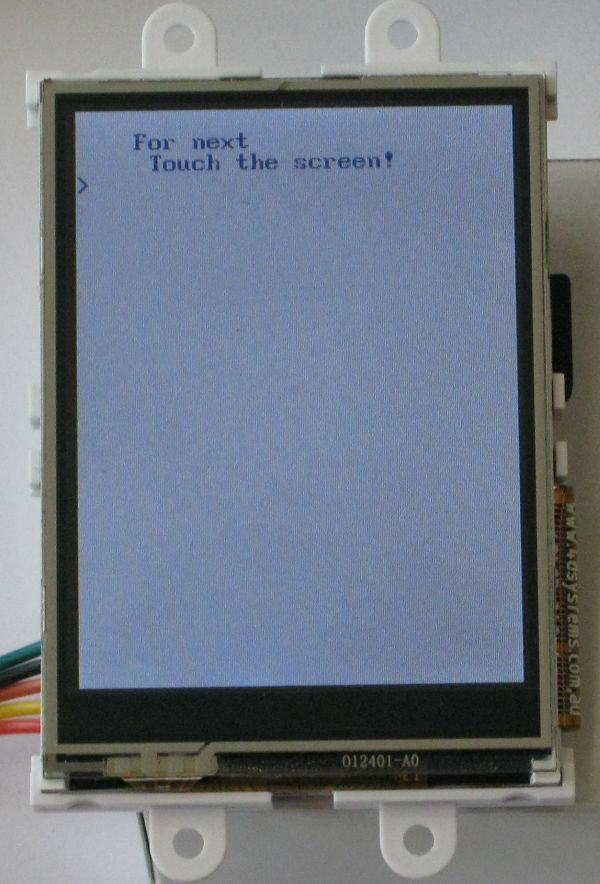
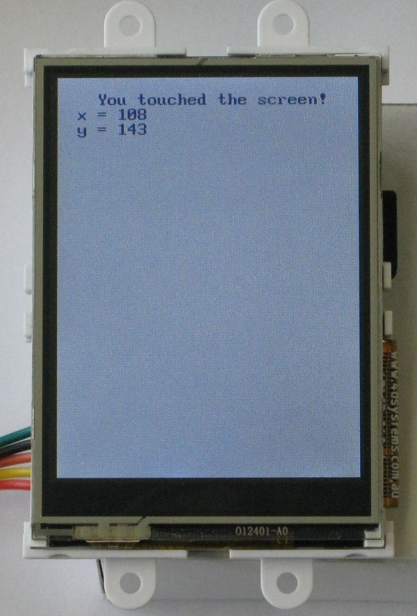

by Dan Peirce B.Sc.
Reformatted from Dokuwiki on July 21, 2013
4D Systems makes small TFT LCDs with full color, built-in controller, sound, touch screen and MicroSD-card interface. They package some in kits complete with serial interface to a raspberry pi. The displays could also be used with a microchip PIC.
So far I have tested displaying text, reading screen touches and playing back sound files in the *.wav format.

 The Tx and Rx on the cable refer to what should be connected to these lines rather than what these lines are on the display!
 The microSD slot and small speaker are both visible
on the back of the display.
Program now responds to touch screen and prints coordinates of touches.

Default screen from 4D Systems

My splash screen

Waiting for screen touch

In this case I touched near the center of the screen.
4D Systems provides C code that can be used to communicate with the display directly (see https://github.com/4dsystems/Picaso- Serial-C-Library/tree/master/C/Include ) but this was written for a windows computer and makes of functions not in a standard C library. Rather than try to modify that code for use on a PIC18F2620 I relied on a different document.
The display module accepts serial commands. These can be sent using the standard printf() function. This is the approach I am taking. If I want to send a string to be displayed all I need to do is send something like the following:
printf("%c%cThis is the string\r\n that will be displayed\r\n%c", 0x00, 0x18, 0x00);
Note that 0x00 followed by 0x18 is the command to display the string that is coming next and the the 0x00 at the end is a NULL character at the end of the string that tells the display there will be no more characters for this command.
The display module responds with a 0x06 acknowledgment followed by two bytes (MSB first) indicating the length of the string displayed.
Note the use of \r\n for a carriage return and newline.
The 4D Systems documentation states that it is important to wait for the acknowledgment of one command before sending another. The initial code I have been writing for the PIC18F2620 makes use of blocking code that would not be appropriate when multitasking. My goal at this point is simply to explore the use of the display. In this scenario a blocking printf() statements are OK. On Microchip PIC18F devices the printf() does not return until all but the last two bytes of the message string are sent.
The PIC18F devices have a two byte output buffer in hardware. The default printf() returns after the last byte is sent to the buffer and before the last byte is sent from the USART. This is important in that even with blocking code one has time to start listening for the acknowledgement before it could possibly be sent (it won't me missed).
The PIC18F device also has a two byte hardware input buffer.
The 4D Systems display can play back sound files in the wav format. The display kit cam with a blank 2GB microSD card. I copied a couple of wav files onto the card and programmed the PIC18F2620 to play a sound each time the screen is touched.
One anomaly occurred. When the filesystem is initialized the document says to expect a 0x06, 0x00, 0x01 response if the file system loads correctly and a 0x06, 0x00, 0x00 if it does not. I got a different response and yet my wave file did play back. It appears the documentation is older than the firmware in my display.
more to come...